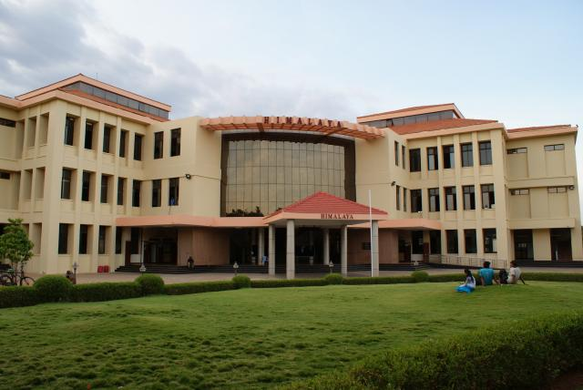
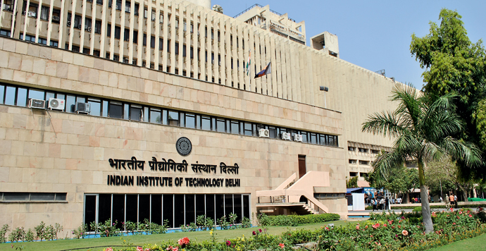
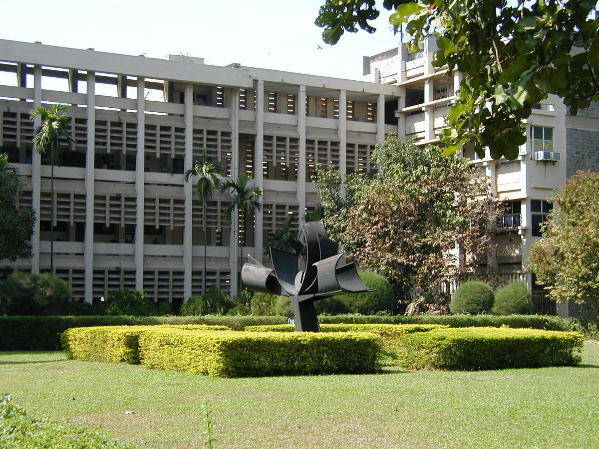
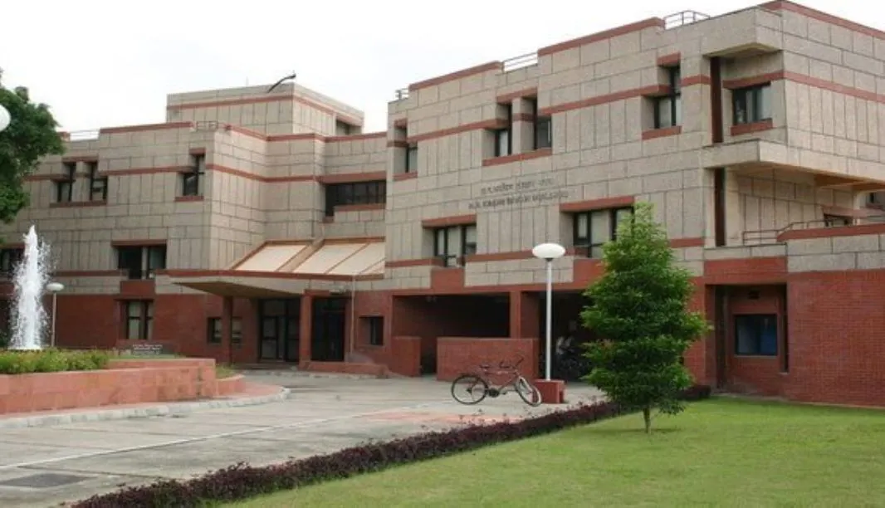

Indian Institute of Technology Madras (popularly known as IITM or IIT Madras) is a public technical university located in Chennai, Tamil Nadu, India. It is selected as one of the 8 public Institutes of Eminence of India. As one of the Indian Institutes of Technology (IITs), it is recognized as an Institute of National Importance. IIT Madras is ranked among the most prestigious academic institutions in India.

Location
Indian Institute of Technology, Delhi
IIT Delhi, officially Indian Institute of Technology Delhi, is a public institute of technology located in New Delhi, India. It is one of the 23 Indian Institutes of Technology created to be Centres of Excellence for India's training, research and development in science, engineering and technology.

Location
Indian Institute of Technology, Bombay
The Indian Institute of Technology Bombay (IIT Bombay) is a public research university and technical institute in Powai, Mumbai, Maharashtra, India. IIT Bombay is ranked among the most prestigious academic institutions in India , and has consistently been the most preferred choice for Indian students in STEM fields such as Computer Science.

Location
Indian Institute of Technology, Kanpur
Indian Institute of Technology Kanpur (IIT Kanpur) is a public institute of technology located in Kanpur, Uttar Pradesh, India. It was declared to be an Institute of National Importance by the Government of India under the Institutes of Technology Act. IIT Kanpur is ranked among the most prestigious academic institutions in India.

Location
Indian Institute of Technology, Kharagpur
Indian Institute of Technology Kharagpur (IIT Kharagpur) is a public institute of technology established by the Government of India in Kharagpur, West Bengal, India. Established in 1951, the institute is the first of the IITs to be established and is recognised as an Institute of National Importance. In 2019 it was awarded the status of Institute of Eminence by the Government of India.